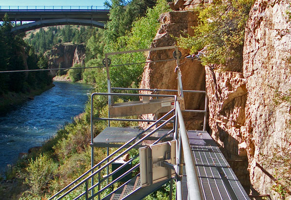

Blue River Below Green Mountain Reservoir
Fishing the lower Blue river can be a pure joy or true heartbreak, sometimes in the same day. Jurassic Park is a nickname that whole heartedly fits this river. The fish are flat out huge dinosaurs that will make you skin moisturize itself and will cause your heart to beat right out of your chest cavity! Notable Drake Hatch and peg egg city.